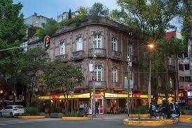
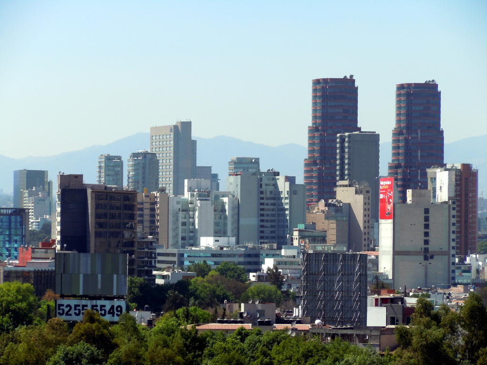

Logística de Viaje: Dónde Dormir y Cómo Moverse
Consejos prácticos para una estancia segura y cómoda.
Sección 1: Las Mejores Zonas para Hospedarse
Reforma y Centro Histórico: Ideal si quieres estar cerca de los museos principales, monumentos y tener acceso fácil a tours guiados.
Roma y Condesa: Las zonas más seguras, arboladas y modernas. Perfectas si viajas solo o con amigos y buscas un ambiente hipster, librerías, cafés y bares.

Polanco: La zona residencial y comercial más exclusiva, ideal para quienes buscan hoteles de lujo, seguridad máxima y compras de alta gama.
